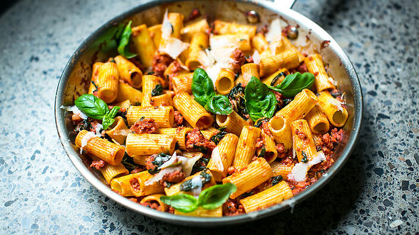

Pork and fennel ragu with pasta

Pork and fennel ragu with a carb base of pasta.
Ingredients
- 250 g rigatoni
- 15 ml olive oil
- 2 garlic cloves, finely chopped/li>
- 1½ tsp fennel seeds
- 3 large pork sausages, casings removed
- 400 g tomato passata
- 50 g frozen spinach
- A good handful of fresh basil
- parmesan cheese shavings, to serve
Steps
- Cook the pasta in a large pot of boiling salted water for 12 minutes or so until al dente, then drain. Return to pot and set aside.
- While the pasta is cooking, heat the oil in a large frying pan over a medium high heat. Add the garlic and fennel seeds and fry for 30 seconds or until aromatic and the garlic begins to go golden. Add in the sausage meat and fry until lightly browned, breaking up with the back of a wooden spoon as it fries.
- Pour in the tomato pasatta, add in the spinach, breaking up with a wooden spoon, and bring to a steady simmer. Cook for 10 minutes until thickened slightly. Check for seasoning and add salt and red chilli flakes as required.
- Pour the sauce into the pot of pasta and stir to combine completely.
- Serve with fresh basil and parmesan shavings.